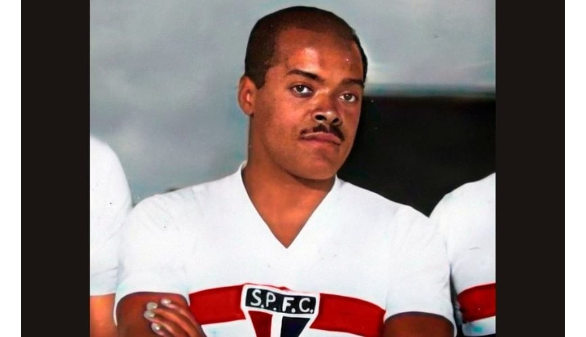

Ídolos do Tricolor
Tudo o que quiser saber sobre o maior clube da história do Brasil
São Paulo FC
Ídolos de um clube de futebol são jogadores que alcançaram um status especial na história da equipe devido ao seu
desempenho excepcional, conquistas memoráveis, longevidade no clube ou conexão emocional com os torcedores.
Eles são admirados e reverenciados pelos fãs, muitas vezes representando os valores e a identidade do clube.
Os ídolos geralmente têm uma influência duradoura no clube e são lembrados com carinho mesmo após sua aposentadoria
ou partida para outros times.
ROGÉRIO CENI
Rogério Ceni é um ídolo do São Paulo FC devido à sua longa e bem-sucedida carreira como goleiro e
posteriormente como treinador. Ele é reconhecido por sua dedicação, liderança e habilidade excepcional
como cobrador de faltas e pênaltis, tendo marcado mais de 130 gols ao longo de sua carreira. Além de
suas conquistas em campo, Ceni personifica os valores do clube e é admirado pelos torcedores tricolores
por sua paixão e compromisso com o São Paulo FC.
Rogério é um lendário jogador que sempre ficará marcado na história do clube, após dedicar sua vida
para o futebol são-paulino, teve diversas glórias como a conquista de libertadores e mundiais sendo
destaque do clube paulista. Atualmente apesar de não ser o treinador da equipe, ficará para sempre
eternizado na história do clube e no coração dos torcedores.
TELÊ SANTANA
Telê Santana é um ídolo do São Paulo FC devido aos títulos conquistados e ao estilo de jogo ofensivo que implementou
nos anos 90. Como treinador, levou o clube a vitórias marcantes, incluindo dois títulos da Copa Libertadores.
Sua filosofia de futebol arte influenciou gerações e sua personalidade carismática o tornou amado pelos torcedores.
Telê Santana deixou um legado duradouro no São Paulo FC e é reverenciado como uma figura icônica do clube.
Tido como lenda, atualmente possue uma estátua com sua figura na entrada do estádio do clube, considerado um, se não
o maior ídolo da história do São Paulo. O lendário treinador faleceu no dia 21 de Abril de 2006, mas ficará eternizado
para sempre na história do clube e no coração dos torcedores.
RAÍ
Raí é um ídolo do São Paulo FC devido às suas conquistas como jogador, incluindo dois títulos da Copa Libertadores e
um Mundial Interclubes. Além de suas habilidades técnicas, ele era conhecido por sua liderança e ética de trabalho exemplar.
Raí personifica os valores do clube e continua sendo reverenciado pelos torcedores tricolores. Raí também é lembrado, como dito, pela sua
ética de trabalho exemplar, profissionalismo e compromisso com o São Paulo FC, após se aposentar ainda ocupou cargos no clube
em diversas funções como os administrativos e de direção, demonstrando seu respeito e amor ao clube.
MINEIRO
Mineiro é um ídolo do São Paulo FC devido à sua contribuição fundamental para a conquista da Copa Libertadores da América em 2005.
Como volante talentoso e versátil, ele marcou o gol decisivo na final, além de ter sido importante em outras competições.
Admirado pelos torcedores pela sua dedicação e profissionalismo, Mineiro representa os valores do clube e é lembrado com carinho
pelos tricolores.
LEONIDAS
Leônidas da Silva, conhecido como "Diamante Negro", é um ídolo do São Paulo FC e do futebol brasileiro. Como atacante brilhante,
foi artilheiro do Campeonato Paulista em duas ocasiões durante sua passagem pelo clube entre 1942 e 1946. Além de suas habilidades
excepcionais, ele popularizou a "bicicleta" no futebol brasileiro. Leônidas é lembrado não apenas por suas conquistas, mas também
por representar o espírito do futebol brasileiro com sua criatividade e paixão pelo jogo.

LUGANO
Diego Lugano é um ídolo do São Paulo FC devido à sua liderança, garra e dedicação como zagueiro durante suas passagens pelo clube.
Capitão em períodos de conquistas importantes, como a Copa Libertadores de 2005, ele conquistou o carinho dos torcedores tricolores.
Sua identificação com o clube e seu compromisso com a equipe o tornaram uma figura icônica para os são-paulinos.